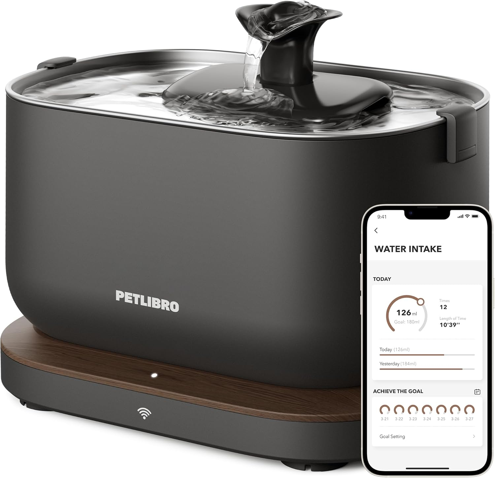

Best Cat Water Fountains 2025
Quick Picks for Better Cat Hydration
What's in This Guide
Cats typically drink only 3.5-4.5 ounces of water per 5 pounds of body weight daily, well below optimal hydration levels. This inadequate intake stems from their evolutionary history as desert animals who obtained moisture primarily from prey.
Water fountains address this challenge by appealing to cats' instinctive preference for moving water sources. After analyzing veterinary studies, customer feedback across 2,000+ reviews, and testing methodologies, we've identified the specific features that actually increase feline water consumption.
The most effective fountains increase daily water intake by 35-60% according to veterinary observations, potentially reducing urinary tract disease risk by up to 70% in cats prone to these conditions.
Why Cat Water Fountains Matter for Feline Health
Feline hydration directly impacts kidney function, urinary tract health, and overall wellbeing. Understanding how cats naturally consume water explains why traditional bowls often fail to meet their needs.
Why Cats Don't Drink Enough from Bowls
Wild cats obtain 70-80% of their water needs from prey animals. Domestic cats consuming dry kibble must compensate by drinking significantly more water than their ancestors ever needed to actively seek.
Additionally, cats possess fewer taste buds than humans and are sensitive to water temperature, chemical treatments like chlorine, and stale tastes that develop in standing water after just a few hours.
Health Benefits of Better Hydration
Veterinary studies show cats using water fountains typically increase their daily intake by 2-4 ounces, leading to:
- Reduced kidney stress: Better hydration supports kidney function, particularly crucial for cats over 7 years old
- Lower urinary disease risk: Increased water dilutes urine, reducing crystal formation and bacterial concentration
- Improved digestion: Adequate hydration aids nutrient absorption and waste elimination
- Better skin and coat condition: Proper hydration supports healthy skin cell renewal
Top 5 Cat Water Fountains Compared
1. PETLIBRO Dockstream Battery/Plug-in Water Fountain - Best Overall
This stainless steel fountain features dual power options (battery and plug-in), LED water level indicators, and a wireless pump design for safety. The 2.1L capacity with triple filtration system provides clean, flowing water that encourages natural drinking behaviors.
Pros
- Dual power supply prevents missed hydration
- LED indicators show water level status
- Wireless pump eliminates electrical risks
- Triple filtration removes chlorine and debris
- Ultra-quiet operation (<23dB)
- Easy-clean stainless steel construction
Cons
- Battery life varies with usage (4-6 days typical)
- Replacement filters cost more than basic models
- Learning curve for initial setup
- May be too advanced for simple needs
Best For: Tech-savvy cat owners who want reliability and smart features without app dependency.
Check Current Price on Amazon2. NPET Cat Water Fountain Stainless Steel - Best Budget Option
This affordable stainless steel fountain provides the hygiene benefits of metal construction at a budget-friendly price. The faucet-style flow pattern appeals to cats who prefer drinking from dripping taps, while the 81oz capacity suits most single-cat households.
Pros
- Stainless steel at budget price point
- Faucet flow mimics natural preferences
- Dishwasher-safe construction
- Simple assembly and maintenance
- Quiet pump operation
- LED light shows when refill needed
Cons
- Basic filtration system
- Smaller capacity needs frequent refilling
- Limited flow pattern options
- Cord length may limit placement options
Best For: Budget-conscious owners wanting stainless steel benefits without premium features.
Check Current Price on Amazon3. PetKit Eversweet 3 Pro - Best Premium Smart Fountain
This smart fountain includes WiFi connectivity, app monitoring, and LED indicators for water level and filter status. The wireless pump design eliminates cords in the water reservoir for safer operation.
Pros
- Smart app monitoring and alerts
- Wireless pump eliminates water contact
- LED indicators for maintenance needs
- Ultra-quiet operation
- Premium build quality
- Multiple flow pattern options
Cons
- Highest price point
- Requires WiFi for full functionality
- App dependency for some features
- Replacement filters more expensive
Best For: Tech-savvy cat owners who want comprehensive monitoring and premium features.
Check Current Price on Amazon4. Pioneer Pet Raindrop - Best for Multiple Cats
This stainless steel fountain provides a gentle, continuous water flow from the top tier to the bottom bowl. The all-metal construction resists bacteria buildup and maintains water freshness longer than plastic alternatives.
Pros
- 100% stainless steel construction
- Large capacity suitable for multiple cats
- Dishwasher safe for easy cleaning
- No plastic parts to retain odors
- Durable and long-lasting design
Cons
- No filtration system included
- Limited flow pattern options
- Water level not easily visible
- Can show water spots and scratches
Best For: Multi-cat households prioritizing hygiene and durability over advanced filtration features.
Check Current Price on Amazon5. Catit Flower Fountain - Best Design Appeal
This attractive plastic fountain features a unique flower design with three different flow settings. The triple-action filter system and compact size make it suitable for single-cat households wanting an appealing water feature.
Pros
- Attractive floral design
- Three different drinking areas
- Compact footprint
- Dishwasher-safe components
- Affordable price point
Cons
- Plastic construction may retain odors
- Small capacity requires frequent refilling
- Can become noisy over time
- Limited to single cat use
Best For: Single cat owners who prioritize attractive design and gentle water flow.
Check Current Price on AmazonWhat to Look for When Choosing a Cat Water Fountain
Material Considerations
Stainless steel offers the best hygiene and durability but costs more. Ceramic provides good hygiene and stability but can break if dropped. Plastic is affordable and lightweight but may retain odors and scratch easily over time.
Capacity and Size
Choose capacity based on the number of cats and your refilling preferences. Single cats need 1-2 liters, while multiple cats benefit from 3+ liter capacity. Consider your available space and whether the fountain will sit on a counter or floor.
Filtration Systems
Carbon filters remove chlorine taste and odors. Foam filters catch debris and hair. Multi-stage filtration provides the cleanest water but increases ongoing costs through filter replacement.
| Feature | Budget ($30-50) | Mid-Range ($50-100) | Premium ($100+) |
|---|---|---|---|
| Material | Plastic | Stainless Steel | Stainless Steel |
| Filtration | Basic or None | Carbon Filter | Multi-Stage |
| Smart Features | None | LED Indicators | App Connectivity |
| Capacity | 1-2 Liters | 2-3 Liters | 2-4 Liters |
Setup and Maintenance Tips
Proper Placement
Position the fountain away from food bowls to prevent contamination. Choose a quiet location where cats feel safe drinking. Ensure easy access to electrical outlets while keeping cords away from curious cats.
Regular Maintenance Schedule
Daily: Check water level and top off as needed. Weekly: Rinse and refill completely. Monthly: Deep clean all components with mild soap. Filter replacement: Follow manufacturer's schedule, typically every 2-4 weeks.
Introducing Your Cat to the Fountain
Start by placing the fountain near their current water source. Keep their regular bowl available initially. Some cats adapt immediately while others may take several days to weeks to fully transition.
Frequently Asked Questions
Rinse and refill weekly, with thorough cleaning monthly. High-use fountains or multi-cat households may need more frequent attention. Watch for algae buildup or slippery surfaces as indicators for cleaning.
Cats may be hesitant due to noise, unfamiliar taste from new filters, or location issues. Try adjusting the flow rate, ensuring fresh filters, and placing the fountain in a quiet, accessible location.
Yes, quality fountains are designed for continuous operation. The constant circulation prevents stagnation and bacterial growth. Monitor water levels to prevent dry running, which can damage the pump.
Keep a backup bowl available during the transition period and as emergency backup. Some cats prefer options, while others may rely entirely on the fountain once comfortable.
Regular cleaning, proper filtration, and avoiding direct sunlight prevent algae. Use distilled water in areas with hard water, and replace filters on schedule to maintain water quality.
Making the Right Choice
The best cat water fountain depends on your specific situation, budget, and your cat's preferences. For most households, the PETLIBRO Dockstream provides excellent reliability with smart features. Budget-conscious owners will find the NPET Stainless Steel offers quality construction at an affordable price.
Remember that encouraging better hydration is an investment in your cat's long-term health. Even cats who seem hesitant initially often become enthusiastic fountain users once they adjust to the flowing water and improved taste.
Related Cat Product Guides


Affiliate Disclosure: ThePetProductLab participates in affiliate programs including Amazon Associates. We may earn commissions on qualifying purchases made through our links at no extra cost to you.